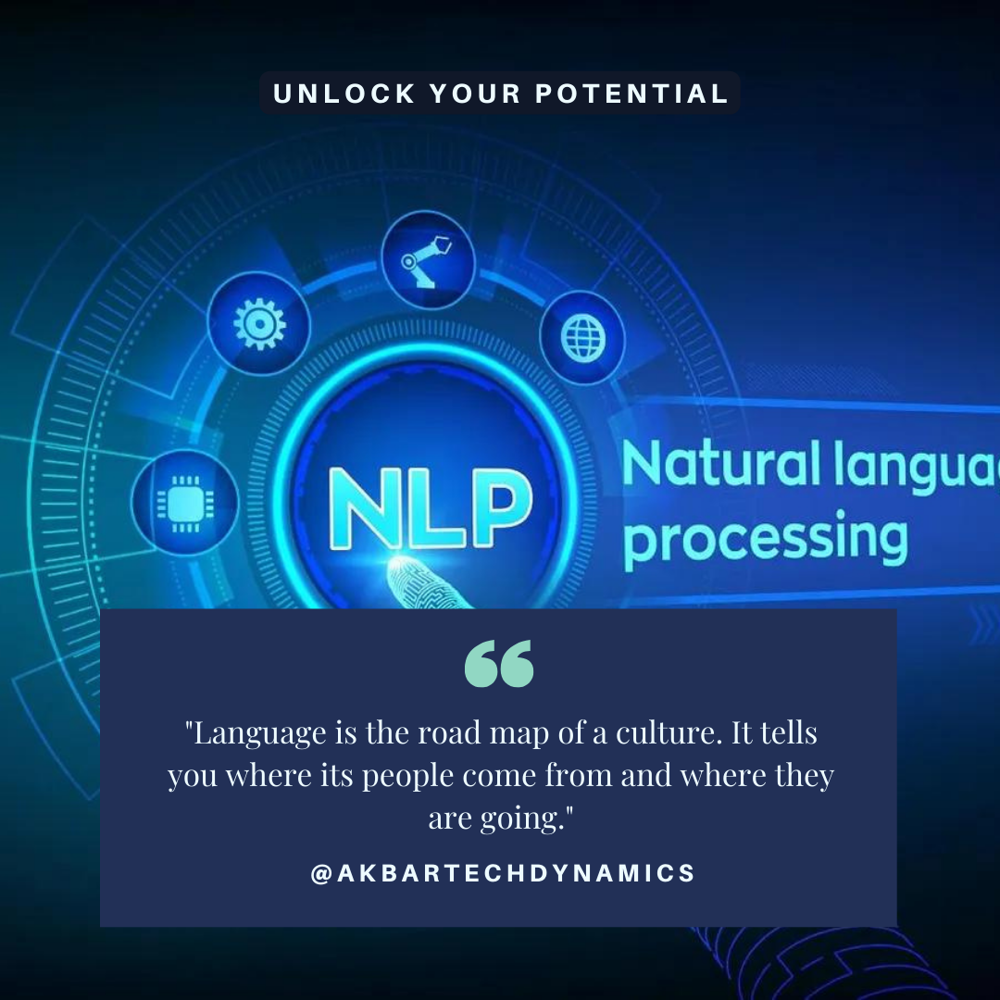

<html lang="en"></html>

<head>
  <meta charset="utf-8">
  <meta content="width=device-width, initial-scale=1.0" name="viewport">
  <title>AkbarTechDynamics</title>
  <meta content="Text Analysis Made Easy with Our NLP Services. Let's Dive into the Data!" name="description">
  <meta content="web applications, AI, ML, data science, business growth solutions" name="keywords">
  <link href="assets/img/oMkMZZ01.svg" rel="icon"> 
  <link href="assets/img/oMkMZZ01.svg" rel="apple-touch-icon">
  <link href="https://fonts.googleapis.com" rel="preconnect">
  <link href="https://fonts.gstatic.com" rel="preconnect" crossorigin>
  <link href="https://fonts.googleapis.com/css2?family=Roboto:ital,wght@0,100;0,300;0,400;0,500;0,700;0,900;1,100;1,300;1,400;1,500;1,700;1,800;1,900&family=Poppins:ital,wght@0,100;0,200;0,300;0,400;0,500;0,600;0,700;0,800;0,900&display=swap" rel="stylesheet">
  <link href="assets/vendor/bootstrap/css/bootstrap.min.css" rel="stylesheet">
  <link href="assets/vendor/bootstrap-icons/bootstrap-icons.css" rel="stylesheet">
  <link href="assets/vendor/aos/aos.css" rel="stylesheet">
  <link href="assets/vendor/glightbox/css/glightbox.min.css" rel="stylesheet">
  <link href="assets/vendor/swiper/swiper-bundle.min.css" rel="stylesheet">
  <link href="assets/css/main.css" rel="stylesheet">
  <link rel="canonical" href="https://akbartechdynamics.in/blog24-details.html">
  <meta property="og:title" content="AkbarTechDynamics">
  <meta property="og:description" content="Innovative solutions for business growth, specializing in web applications, AI, ML, and data science.">
  <meta property="og:image" content="https://akbartechdynamics.in/assets/img/oMkMZZ01.svg">
  <meta property="og:url" content="https://akbartechdynamics.in/">
  <script type="application/ld+json">
  {
    "@context": "https://schema.org",
    "@type": "Organization",
    "name": "AkbarTechDynamics",
    "url": "https://akbartechdynamics.in",
    "logo": "https://akbartechdynamics.in/assets/img/oMkMZZ01.svg",
    "contactPoint": {
      "@type": "ContactPoint",
      "telephone": "+91 73370 90600",
      "contactType": "Customer Service"
    },
    "sameAs": [
      "https://www.linkedin.com/in/akbar-pasha-mohammad-68b817140",
      "https://www.instagram.com/akbartechdynamics"
    ]
  }
  </script>

</head>

<body class="index-page">
  <header id="header" class="header d-flex align-items-center fixed-top">
    <div class="container-fluid container-xl position-relative d-flex align-items-center">
      <a href="index.html" class="logo d-flex align-items-center me-auto">
        
        <h1 class="sitename">AkbarTechDynamics</h1>
      </a>
      <nav id="navmenu" class="navmenu">
        <ul>
          <li><a href="index.html">Home</a></li>
          <li><a href="index.html#about">About Us</a></li>
          <li><a href="index.html#services">Services</a></li>
          <li><a href="index.html#contact">Contact</a></li>
          <li><a href="blogs.html">Blog</a></li>
          <li><a href="careers.html">Careers</a></li>
          <li><a href="portfolio.html">Portfolio</a></li>
        </ul>
        <i class="mobile-nav-toggle d-xl-none bi bi-list"></i>
      </nav>
    </div>
  </header>

  <main class="main">
    <!-- Page Title -->
    <div class="page-title">
      <div class="heading">
        <div class="container">
          <div class="row d-flex justify-content-center text-center">
            <div class="col-lg-8">
              <h1>Blog Details</h1>
              <p class="mb-0">Welcome to AkbarTech Dynamics! We're Here to Help You Ace Your Academic Projects with Cutting-Edge Technology and Personalized Solutions. Let's Innovate Together!</p>
            </div>
          </div>
        </div>
      </div>
    </div><!-- End Page Title -->

    <div class="container">
      <div class="row">
        <div class="col-lg-8">
          <!-- Blog Details Section -->
          <section id="blog-details" class="blog-details section">
            <div class="container">
              <article class="article">
                <h2 class="title">Text Analysis Made Easy with Our NLP Services: Let's Dive into the Data!</h2>
                <div class="meta-top">
                  <ul>
                    <li class="d-flex align-items-center"><i class="bi bi-person"></i> <a href="#">Akbar Pasha</a></li>
                    <li class="d-flex align-items-center"><i class="bi bi-clock"></i> <a href="#"><time datetime="2024-09-20">Sep 20, 2024</time></a></li>
                  </ul>
                </div><!-- End meta top -->

                <div class="content">
                  <h3>Introduction</h3>
                  <p>Natural Language Processing (NLP) has transformed the landscape of text analysis, making it accessible, efficient, and incredibly insightful. With our advanced NLP services, we empower businesses, researchers, and analysts to uncover valuable insights from vast amounts of textual data effortlessly. In this article, we'll explore how our NLP services simplify text analysis and help you dive deeper into your data for research and strategic decision-making. Let's begin by understanding the basics and then delve into the advanced applications and benefits of NLP.</p>
                  <h3>Introduction to Text Analysis and NLP</h3>
                  <h4>What is Text Analysis?</h4>
                  <p>Text analysis, also known as text mining, involves deriving meaningful information from text. It encompasses various techniques and methodologies to process and analyze large volumes of unstructured data, converting it into actionable insights. Text analysis is widely used in different fields such as market research, customer feedback analysis, healthcare, and social media monitoring.</p>
                  <h4>The Role of Natural Language Processing (NLP) in Text Analysis</h4>
                  <p>Natural Language Processing (NLP) is a branch of artificial intelligence that focuses on enabling machines to understand, interpret, and respond to human language in a valuable way. NLP is a crucial component of text analysis, offering sophisticated tools and techniques to process and analyze text data efficiently. From sentiment analysis to named entity recognition, NLP techniques facilitate a deeper understanding of text content, allowing for more nuanced and actionable insights.</p>
                  <h3>Why Use NLP for Text Analysis?</h3>
                  <h4>Benefits of NLP in Data Processing</h4>
                  <p>NLP brings several advantages to the table when it comes to text analysis:</p>
                  <p><b>Efficiency and Speed: </b>NLP algorithms can process vast amounts of text quickly, which is essential for businesses that need real-time data insights.</p>
                  <p><b>Accuracy and Precision: </b>Advanced NLP techniques improve the accuracy of text analysis, minimizing errors that can occur with manual analysis.</p>
                  <p><b>Scalability for Big Data: </b>NLP is designed to handle large datasets, making it ideal for companies dealing with extensive text data from various sources.</p>
                  <h4>Real-World Applications of NLP in Text Analysis</h4>
                  <p>NLP is widely applicable across various domains:</p>
                  <p><b>Sentiment Analysis in Market Research: </b>NLP can analyze consumer sentiment from social media, reviews, and surveys, providing valuable insights for product development and marketing strategies.</p>
                  <p><b>Named Entity Recognition in Healthcare: </b>NLP helps in extracting specific information like drug names, diseases, and patient details from medical records, facilitating better patient care and research.</p>
                  <p><b>Customer Feedback Analysis for Business Insights: </b>Analyzing customer feedback using NLP can help businesses understand customer needs and preferences, leading to improved products and services.</p>
                  <h4>Key NLP Techniques for Effective Text Analysis</h4>
                  <p>Several NLP techniques are pivotal for effective text analysis:</p>
                  <p><b>Tokenization and Lemmatization: </b>Breaking down text into smaller units (tokens) and normalizing words to their base forms (lemmas).</p>
                  <p><b>Part-of-Speech Tagging: </b>Identifying the grammatical parts of speech (nouns, verbs, adjectives, etc.) in the text.</p>
                  <p><b>Named Entity Recognition (NER): </b>Detecting and categorizing key entities in text, such as names of people, organizations, and locations.</p>
                  <p><b>Topic Modeling and Classification: </b>Grouping similar texts based on underlying themes or topics.</p>
                  <p><b>Sentiment Analysis Techniques: </b>Determining the sentiment behind text data (positive, negative, or neutral) to gauge public opinion or mood.</p>
                  <h4>How Our NLP Services Simplify Text Analysis</h4>
                  <p>Our NLP services are designed to make text analysis as straightforward as possible:</p>
                  <p><b>User-Friendly Interfaces for Easy Data Handling: </b>We provide intuitive platforms that make data handling seamless, even for non-technical users.</p>
                  <p><b>Customizable Solutions Tailored to Your Needs: </b>Our NLP solutions can be customized to meet the specific needs of different industries and research requirements.</p>
                  <p><b>Integrating NLP with Existing Systems: </b>We offer robust integration capabilities, ensuring that our NLP tools can seamlessly fit into your existing workflows and systems.</p>
                  <h4>Case Studies: Success Stories with Our NLP Services</h4>
                  <p>Here are some success stories from clients who have utilized our NLP services:</p>
                  <p><b>Improving Customer Satisfaction with Sentiment Analysis: </b>A retail client used our sentiment analysis tools to monitor social media feedback, leading to a 20% increase in customer satisfaction scores.</p>
                  <p><b>Enhancing Medical Research with Named Entity Recognition: </b>A healthcare organization leveraged our NER tools to extract valuable data from patient records, speeding up research and improving patient outcomes.</p>
                  <p><b>Optimizing Marketing Strategies with Text Classification: </b>A marketing firm utilized our text classification tools to better understand customer preferences, resulting in more targeted and effective campaigns.</p>
                  
                  <h3>Getting Started: How to Leverage Our NLP Services</h3>
                  <h4>Step-by-Step Guide to Using Our Services</h4>
                  <p><b>Sign Up and Set Up: </b>Create an account on our platform and configure your text analysis preferences.</p>
                  <p><b>Upload Your Data: </b>Import your text data securely into our platform.</p>
                  <p><b>Choose Analysis Parameters: </b>Select the type of analysis you want (e.g., sentiment analysis, NER, topic modeling).</p>
                  <p><b>Run Analysis: </b>Execute the analysis and wait for the results.</p>
                  <p><b>Review and Interpret Results: </b>Access detailed reports and visualizations to interpret your data.</p>
                  <h4>Pricing and Packages</h4>
                  <p>We offer flexible pricing models tailored to different needs—whether you’re a startup or a large enterprise. Check our website for more details on our pricing and packages.</p>
                  <h4>Customer Support and Resources</h4>
                  <p>We provide 24/7 customer support, detailed documentation, and tutorials to help you make the most of our NLP services.</p>
                  <h4>Future Trends in NLP and Text Analysis</h4>
                  <p>The future of NLP is full of potential:</p>
                  <p><b>Advances in Deep Learning for NLP: </b>Deep learning models are making NLP more accurate and capable of understanding complex language nuances.</p>
                  <p><b>The Role of AI in Future Text Analysis: </b>AI is set to revolutionize text analysis further, making it more intelligent and context-aware.</p>
                  <p><b>Ethical Considerations and Challenges: </b>As NLP evolves, it’s crucial to address ethical issues like data privacy, bias, and the ethical use of AI.</p>
                  <h3>Conclusion: Unleashing the Power of Data with NLP</h3>
                  <p>By leveraging our NLP services, you can transform how you analyze text data, gaining insights that drive strategic decisions and improve outcomes. Whether you're in healthcare, marketing, or any other industry, our solutions are designed to simplify text analysis and make it more accessible.</p>
                </div><!-- End post content -->
              </article>
            </div>
          </section><!-- /Blog Details Section -->
        </div>

        <div class="col-lg-4 sidebar">
          <div class="widgets-container">
            <!-- Recent Posts Widget -->
            <div class="recent-posts-widget widget-item">
              <h3 class="widget-title">Recent Posts</h3>
              <div id="content-container"></div>
              <div id="recent-posts-content"></div>        <!-- Content from RecentPosts.html will be injected here -->
                <script>
                  document.addEventListener('DOMContentLoaded', function() {
                    fetch('RecentPosts.html')
                    .then(response => {
                      if (!response.ok) {
                        throw new Error('Network response was not ok');
                      }
                      return response.text();
                    })
                    .then(data => {
                      // Create a temporary element to parse HTML
                      let tempDiv = document.createElement('div');
                      tempDiv.innerHTML = data;
                      // Assuming that the content in RecentPosts.html is in a specific element, e.g., <div id="recent-posts-content">
                        let content = tempDiv.querySelector('#recent-posts-content');
                        // Insert the content into the container
                        document.getElementById('content-container').innerHTML = content.innerHTML;
                      })
                      .catch(error => {
                        console.error('There was a problem with the fetch operation:', error);
                      });
                     })
                </script>
            </div>  
          </div>
        </div>  
      </div>
    </div>

    <!-- Faq Section -->
    <section id="faq" class="faq section">
      <!-- Section Title -->
      <div class="container section-title" data-aos="fade-up">
        <p>Frequently Asked Questions</p>
      </div><!-- End Section Title -->
      <div class="container">
        <div class="row">
          <div class="col-lg-6" data-aos="fade-up" data-aos-delay="100">
            <div class="faq-container">
              <div class="faq-item faq-active">
                <h3>What is Natural Language Processing (NLP)?</h3>
                <div class="faq-content">
                  <p>NLP is a field of artificial intelligence focused on enabling machines to understand, interpret, and respond to human language.</p>
                </div>
                <i class="faq-toggle bi bi-chevron-right"></i>
              </div><!-- End Faq item-->
              <div class="faq-item">
                <h3>How can NLP improve business insights?</h3>
                <div class="faq-content">
                  <p>NLP can analyze large volumes of text data to identify trends, sentiments, and actionable insights, helping businesses make data-driven decisions.</p>
                </div>
                <i class="faq-toggle bi bi-chevron-right"></i>
              </div><!-- End Faq item-->
              <div class="faq-item">
                <h3>Are NLP services scalable for large datasets?</h3>
                <div class="faq-content">
                  <p>Yes, our NLP services are designed to handle large datasets efficiently, making them suitable for big data applications.</p>
                </div>
                <i class="faq-toggle bi bi-chevron-right"></i>
              </div><!-- End Faq item-->
            </div>
          </div><!-- End Faq Column-->
          <div class="col-lg-6" data-aos="fade-up" data-aos-delay="200">
            <div class="faq-container">
              <div class="faq-item">
                <h3>What industries benefit most from NLP in text analysis?</h3>
                <div class="faq-content">
                  <p>Industries such as healthcare, marketing, finance, and customer service significantly benefit from NLP for text analysis.</p>
                </div>
                <i class="faq-toggle bi bi-chevron-right"></i>
              </div><!-- End Faq item-->
              <div class="faq-item">
                <h3>How does NLP handle different languages and dialects?</h3>
                <div class="faq-content">
                  <p>Our NLP services support multiple languages and can be customized to handle various dialects, ensuring accurate analysis regardless of language.</p>
                </div>
                <i class="faq-toggle bi bi-chevron-right"></i>
              </div><!-- End Faq item-->
              <div class="faq-item">
                <h3>How secure is the data processed by NLP services?</h3>
                <div class="faq-content">
                  <p>Data security is our priority. We use advanced encryption and secure protocols to ensure your data is safe and confidential.</p>
                </div>
                <i class="faq-toggle bi bi-chevron-right"></i>
              </div><!-- End Faq item-->
            </div>
          </div><!-- End Faq Column-->
        </div>
      </div>
    </section><!-- /Faq Section -->
  </main>

  <footer id="footer" class="footer">
    <div class="container footer-top">
      <div class="row gy-4">
        <div class="col-lg-4 col-md-6 footer-about">
          <a href="#" class="d-flex align-items-center">
            <span class="sitename">AkbarTechDynamics</span>
          </a>
          <div class="footer-contact pt-3">
            <p>Khammam</p>
            <p>Telanagana, IN 507003</p>
            <p class="mt-3"><strong>Phone:</strong> <span>+91 73370 90600</span></p>
            <p><strong>Email:</strong> <span>akbartechdynamics@gmail.com</span></p>
          </div>
        </div>
        <div class="col-lg-4 col-md-12">
          <h4>Follow Us</h4>
          <p>For more Updates On Trainings/Internships/JOB Opportunities</p>
          <div class="social-links d-flex">
            <a href="https://www.instagram.com/akbartechdynamics?igsh=MXNtcHJqbnJseWU0dw%3D%3D&utm_source=qr" target="_blank"><i class="bi bi-instagram"></i></a>
            <a href="https://www.linkedin.com/in/akbar-pasha-mohammad-68b817140?lipi=urn%3Ali%3Apage%3Ad_flagship3_profile_view_base_contact_details%3B8KxVN2vEQw2TBM5io%2F00OA%3D%3D" target="_blank"><i class="bi bi-linkedin"></i></a>
          </div>
        </div>
      </div>
    </div>
  </footer>

  <a href="#" id="scroll-top" class="scroll-top d-flex align-items-center justify-content-center"><i class="bi bi-arrow-up-short"></i></a>
  <script src="assets/vendor/bootstrap/js/bootstrap.bundle.min.js"></script>
  <script src="assets/vendor/php-email-form/validate.js"></script>
  <script src="assets/vendor/aos/aos.js"></script>
  <script src="assets/vendor/glightbox/js/glightbox.min.js"></script>
  <script src="assets/vendor/purecounter/purecounter_vanilla.js"></script>
  <script src="assets/vendor/imagesloaded/imagesloaded.pkgd.min.js"></script>
  <script src="assets/vendor/isotope-layout/isotope.pkgd.min.js"></script>
  <script src="assets/vendor/swiper/swiper-bundle.min.js"></script>
  <script src="assets/js/main.js"></script>
</body>

</html>